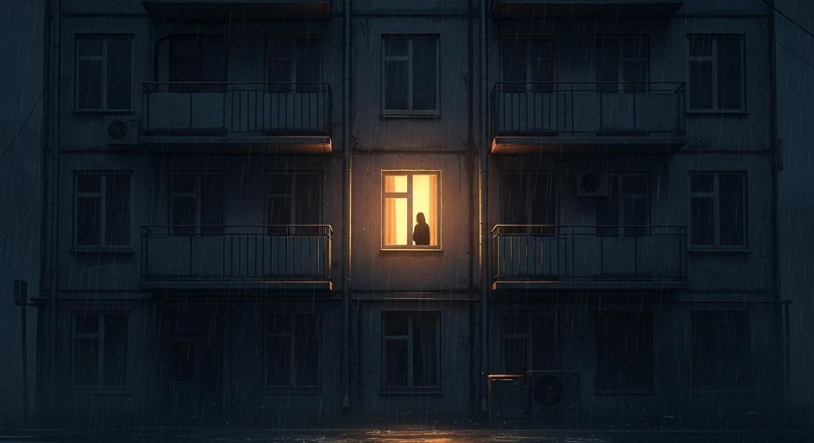
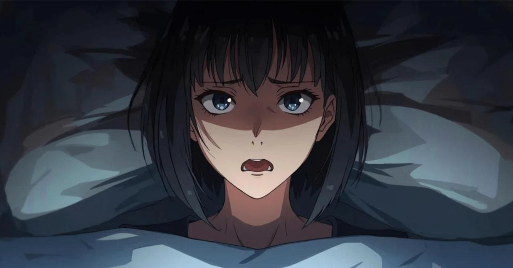
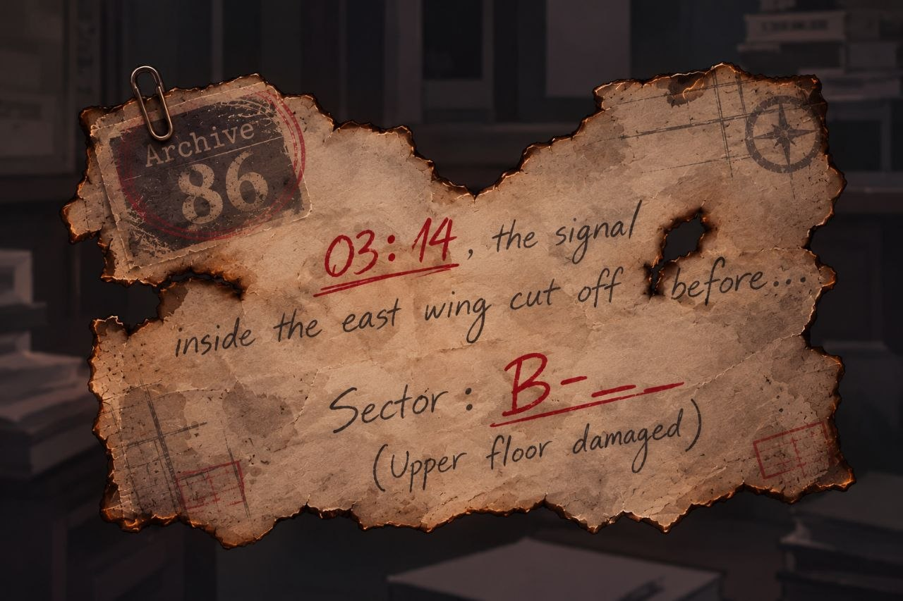

THE TRUTH IS HIDDEN.


You're closer than you think.
The truth is waiting at 03:14.
Don't overlook what's hidden behind the clock.
Your first clue is right where time stops.
— Archive 86

العقارب متوقفة تماماً... يبدو أن هناك ورقة صغيرة عالقة خلف الإطار!
A mysterious number has been added to your evidence notebook.